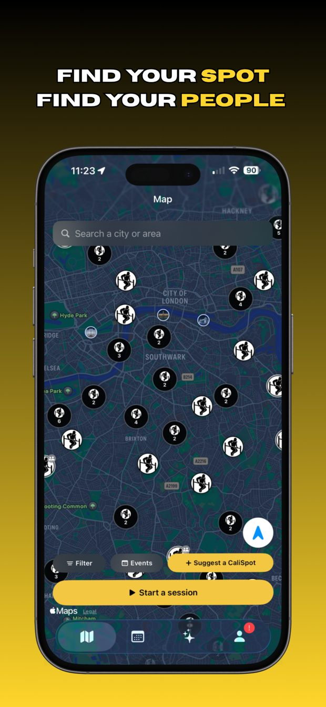
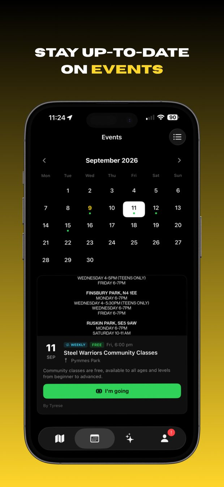
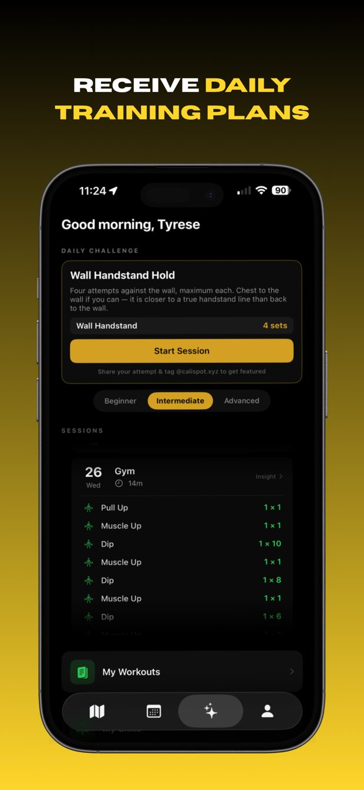
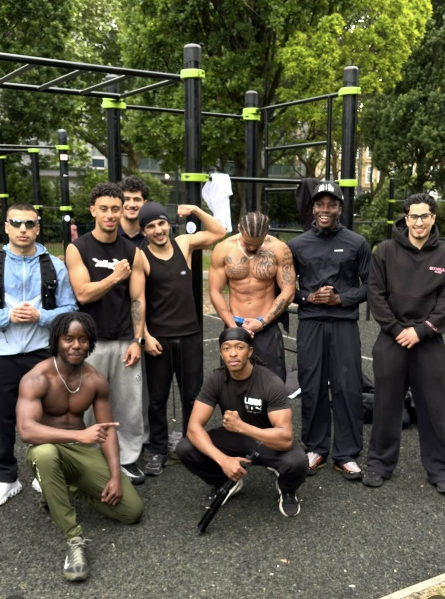
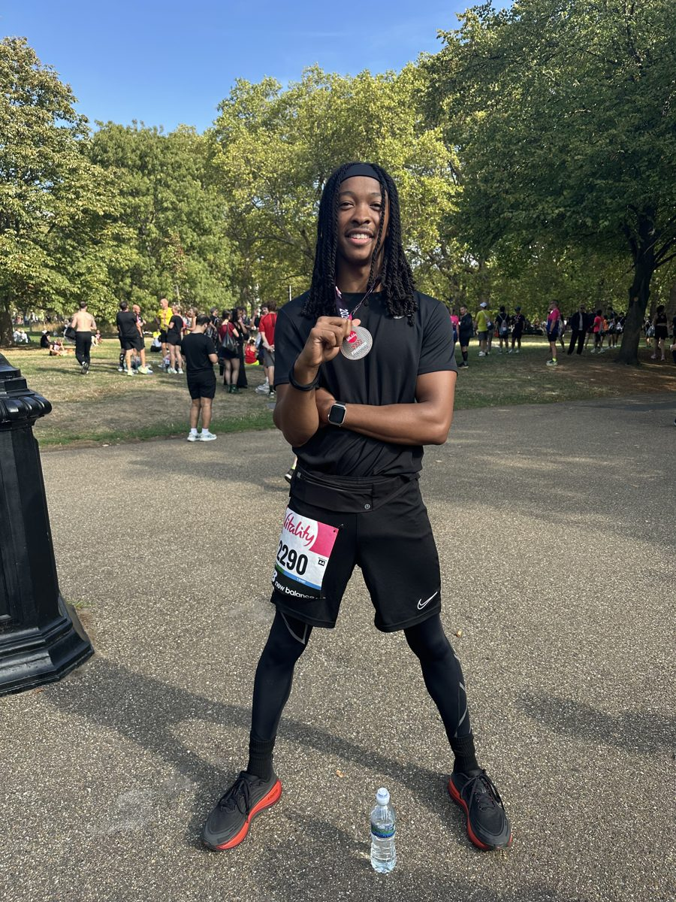
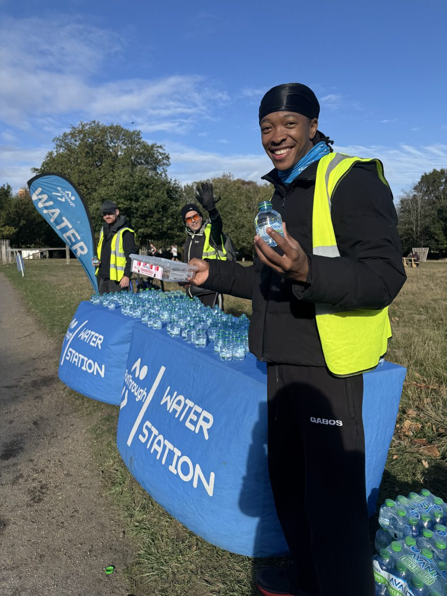

London
I build apps and look after the people who use them.
I built CaliSpot, an app for finding outdoor calisthenics spots, and I've been the person its 2,300+ users message when something's wrong or they want something new.
Before that I spent years working with customers in restaurants. Now I'm looking for a customer support, customer success or onboarding role at a software company.
CaliSpot helps people find outdoor training spots, events and people to train with. It's live on iOS and Android.



Messages come in from everywhere: in-app feedback, email, Instagram DMs, app store reviews. I reply to them myself, try to reproduce the problem, then fix it, find a workaround or put it in the next release.
When the same complaint keeps coming up, that's what gets fixed first, and I let people know when something they reported has shipped. Over two months of working like this, weekly active users went up 20%.
If I started again, I'd set up a help centre and saved replies much earlier, so the common questions answer themselves.
One person asked for dark mode. But everyone had to scroll around the map to find a park. So I built a map search bar first, and people responded well to it.
In one month there were 4,669 app opens but only 60 logged workouts. People come back to find places to train, not to log their training. So I put my effort into spot discovery and added reviews to each spot, so people can judge a spot before they travel to it.
I pace at 4RC Run Club, train calisthenics in parks around London, and recently marshalled at a half marathon in Richmond Park, handing out water and sweets to runners.



Built and run the app with AI tools. All user support, releases and feedback.
Led a team of 5 through busy service and dealt with complaints face to face.
Customer calls, orders, drivers, complaints and refunds.
Made paint-splattered jeans to order with a 4-day turnaround, and released an arcade game that got 1,500+ downloads.
I can't code, so I built CaliSpot with Claude and ChatGPT. I explain what I want and why, test what comes back, and keep going until it works. I use it for research and first drafts too, but the decisions are mine.